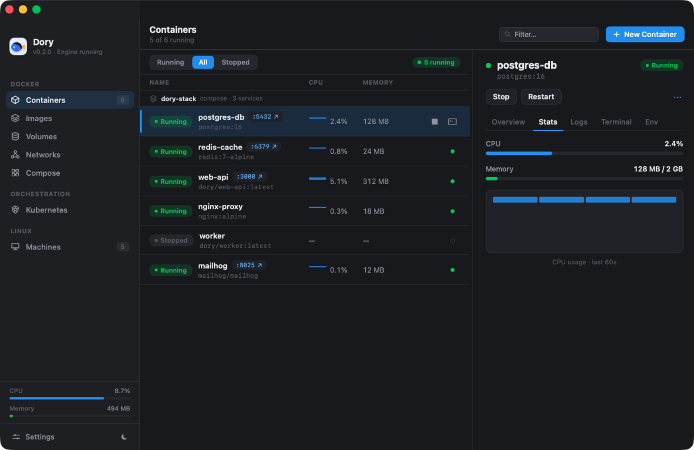
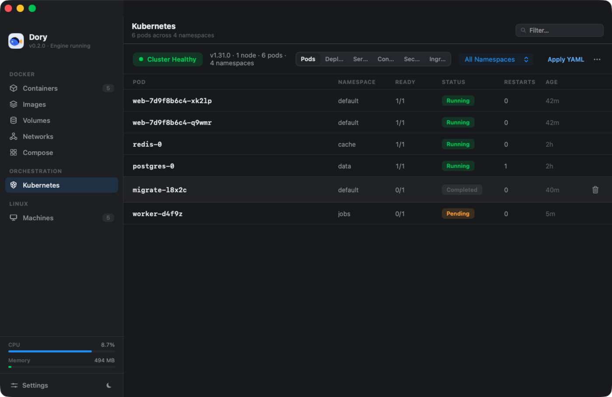
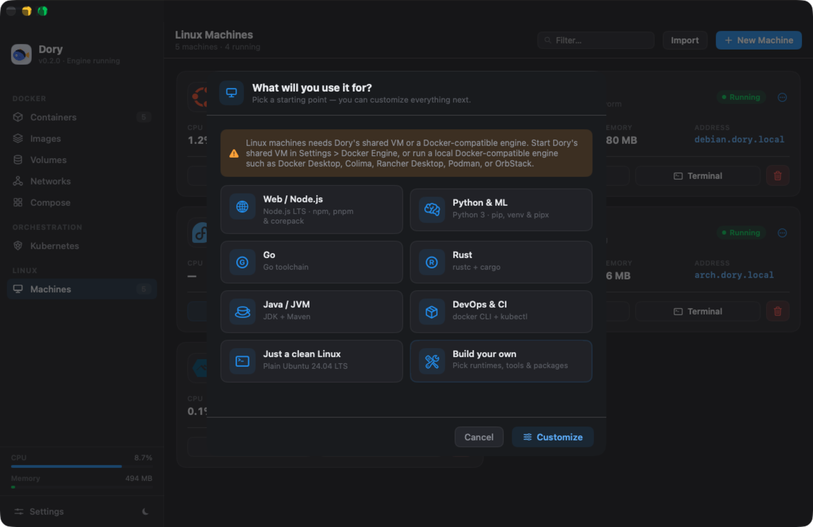
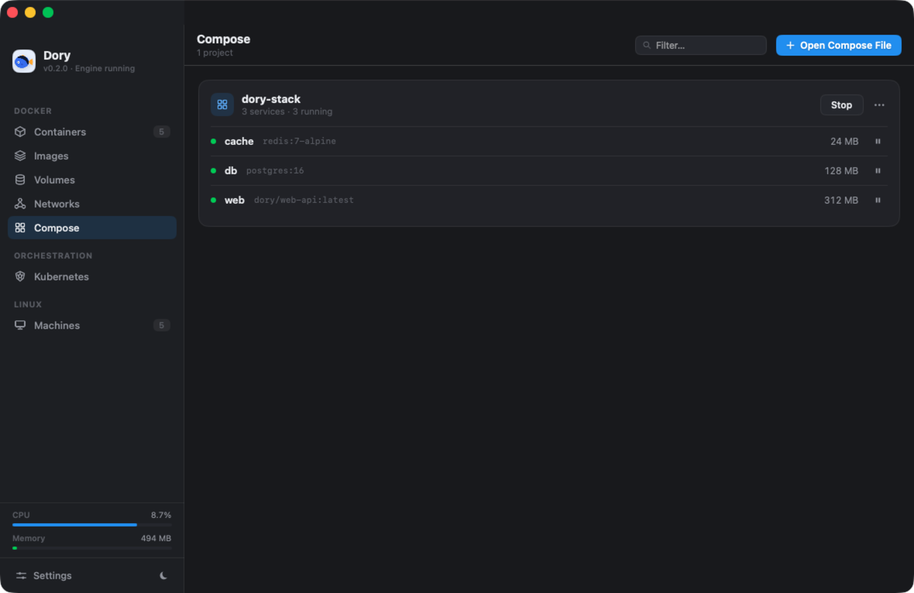

Docker & Linux containers, native to your Mac.
One shared Linux VM for every container. A real Docker socket your CLI already speaks. HTTPS domains, one-click Kubernetes, and full Linux machines — in a ~6 MB native app that's free and open source.
brew install --cask Augani/dory/dory
Every VM you don't boot is RAM you keep.
Apple's container tooling boots a
micro-VM — kernel, init, memory ballast — per container. Dory boots one persistent VM,
runs dockerd inside it, and every container shares
that single kernel and memory pool. Watch what happens as containers stack up:
Illustrative animation. Anchored to our measurement: 2 idle containers ≈ 122 MB total in Dory's shared VM vs ≈ 574 MB as per-container VMs on the same machine (methodology).
Built like a systems tool, not a wrapper.
Dory's transport, HTTP server, YAML parser, and Docker API layer are hand-rolled Swift — no Electron, no Node sidecars, no frameworks between your CLI and the engine.
A real Docker socket
Dory serves the Docker Engine API on a unix socket with its own HTTP/1.1 implementation —
including connection hijack for exec and
attach streams — and registers a
dory context so the CLI you already have just points at it.
Domains & TLS, locally issued
Every container gets name.dory.local via a scoped
resolver entry. Dory runs its own certificate authority, mints per-host certs on the fly, terminates TLS
in-app, and proxies to the container. Consent-gated — nothing touches your system silently.
One VM, booted in-process
Apple's containerization framework boots the Linux VM;
dockerd runs inside; virtiofs shares your home
directory at the same path, so bind mounts resolve with zero setup. x86 images run via qemu binfmt.
The whole workflow, not a demo.

Everything about a container, one pane away.
- Live CPU & memory with per-container history, sampled from the real stats API.
- Logs stream in color; an embedded terminal drops you into
execwithout leaving the app. - Compose projects group automatically — stop a whole stack in one click.
- Every container shows its
*.dory.localdomain, IP, ports, and restart policy.

A cluster you turn on, not one you assemble.
- One-click k3s inside the same shared VM — no second VM tax, no kind/minikube yak-shave.
- Pick your Kubernetes version; browse pods, deployments, services, config, secrets, ingress.
- Exec into pods, scale and restart deployments,
kubectl applyfrom the app. - Your existing
kubectlworks — Dory just wires the kubeconfig.

Machines that arrive ready to work.
- Full Ubuntu, Debian, Fedora, Alpine, or Arch — systemd, SSH, terminal, snapshots.
- Pick a use-case — Node, Python & ML, Go, Rust, Java, DevOps — and the machine provisions itself.
- Or compose your own: check off runtimes, tools, and packages before it boots.
- Each machine gets a
name.dory.localaddress on your Mac.

Your stack, your files, zero rewrites.
- Dory parses
compose.yamlnatively:.env+ variable interpolation,depends_onordering, andservice_healthywaits via real health probes. - Migration imports images and containers from Docker Desktop or OrbStack in minutes.
- First launch is guided end-to-end — including a one-click engine toolchain install.
- Honest scorecard: every feature's status is tracked publicly in COMPATIBILITY.md.
Your RAM belongs to you.
Free means free.
| Dory | Docker Desktop | OrbStack | |
|---|---|---|---|
| Price | Free, forever | Paid ≥250 employees / $10M rev | $8/user/mo commercial |
| Open source | GPL-3.0 | Proprietary app | Proprietary |
| Account required | Never | For paid terms | Not for personal |
| Shared-VM engine | Yes | Fixed VM block | Yes |
| Kubernetes versions | Selectable (k3s) | Pinned to release | One, auto-bumped |
Sourced and kept honest — read the full comparison with citations.
Up and running in a minute.
Install with Homebrew, or grab the notarized app from GitHub Releases. First launch walks you through the rest — engine included.
brew install --cask Augani/dory/dory
macOS 26 (Tahoe) on Apple silicon for the standalone engine · macOS 15+ against an existing Docker-compatible engine